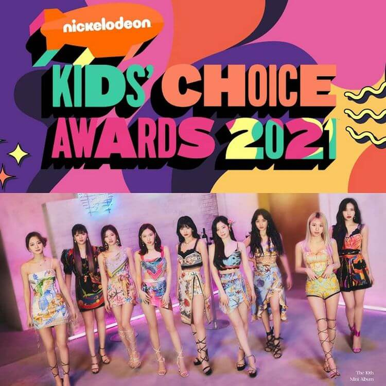
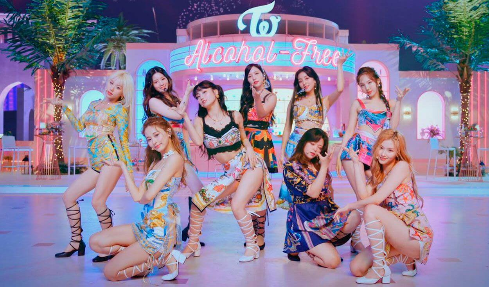
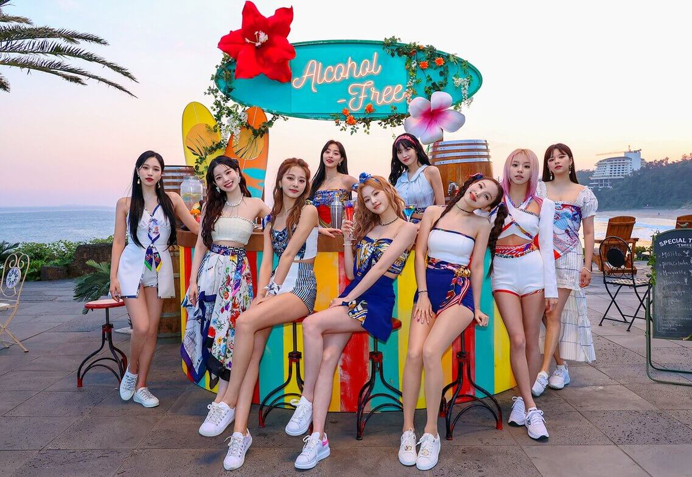

TWICE vuelve con poderoso MV “Perfect world” y deja sin aliento a ONCE.
Noticias

TWICE Japón confirma fecha de lanzamiento de su nuevo comeback Japones para el 28 de Julio.
Twice Tzuyu lanza su primer melody project, y da las gracias a once por el apoyo.

EL grupo de Kpop Twice son nominadas en la categoria bomba K-pop.

TWICE hizo comeback con “Alcohol-free”: MV, performance en Ellen show.

TWICE regresa con un poderoso MV veraniego de su canción "Alcohol-Free".